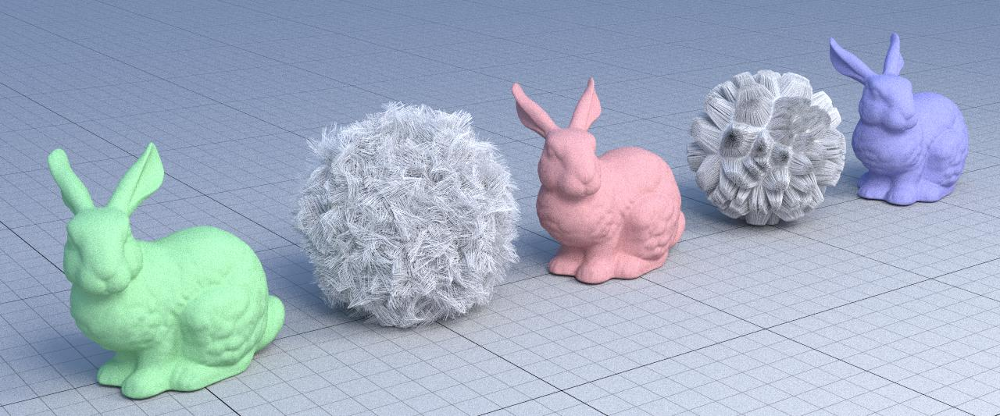

HOMEWORK 2: PATH TRACING
Autohor: Denise Landini
Matricola: 1938388
Mandatory functionality
In this homework I implement the following features:
-
Camera Sampling in functions
sample_camera() and eval_camera()
-
Naive Path tracing in function
trace_naive()
- Brdf sampling in function
eval_brdfcos(), sample_brdscos()
and sample_brdfcos_pdf()
-
Delta handling in function
eval_delta(), sample_delta() and sample_delta_pdf()
-
Light sampling in function
sample_lights() and sample_lights_pdf()
-
Path tracing in function
trace_path().
Extra Credit
For this 8 points I choose:
-
Refraction in all BRDFs functions:
I insert the flag of the refraction in:
eval_brdfcos,
eval_delta,
sample_brdfcos,
sample_delta,
sample_brdfcos_pdf.
- Large Scenes:
I test my renderer for render the supplied large scene.
In particular,
I render the bistrointerior, bistroexterior, landscape, rungholt and sanmiguel images.
All the images are compiled 1024 times with 1280 for resolution, excepet bistroexterior because it freezer at 464 executions. So I compile it for 256 times at resolution 720.
- Stratified Sampling 1:
I created a new shader named shade_stratified_sampling in which I computed the value of the weight and of the i in a different way. In fact, I considered the function sample_hemisphere_cos to assign a value to the "i" variable, and I use eval_brdfcos/sample_hemisphere_cos_pdf to compute the "weight" variable. Comparing the images with those of shade_naive I notice that compiling the same number of times they are grainier.
In particular, you can see the differences in the following images (I report only one example), all the other are in the stratified_sampling_1 folder.
Stratified:

Naive:
- MYOS, make your own scenes:
For each scene that I made, I created a new folder in which I inserted the shapes and the textures that I used.
I also created a JSON file, in which I entered all the settings
necessary in order to create the scene.
I create 5 scenes:
- Set table
This scene is located in the scene_project0 folder. In this scene I wanted to represent a table set for a person, in which
I inserted a chair, a table, a glass, a wine glass, a spoon, thenepkins as objects.
In this case I choose to insert the light coming from the upper left of the scene and I decided to use light colors, like white and pink.
- Illuminated garden
This scene is located in the scene_project1 folder. In this scene I represented the illuminated garden, in which there are a garden table and a garden chair. In the garden there are 3 trees and 3 lights that illuminate the garden at night. In the dim light on the right side of the garden you can see white-haired rabbit.
- Fire breathing dragon
This scene is located in the scene_project2 folder. In this scene I represented a dragon with a metallic material. The fire spat out by the dragon is represented by fireballs. The light in addition to coming from the fireballs also comes from the right side od the scene to highlight the scales of the dragon.
- Combination of geometries
This scene is located in the scene_project3 folder. In this scene I represented two pyramids of balls. The pyramid on the left is made up of metal balls, the second is made up of glass balls. Furtheremore, the peculiarity of this photo is given by the refraction applied to the balls. Even if you don't notic the sky in the image is not black, but it is an image with blach and white sqaudres, like the floor.
- BMW with illuminated Christmas tree and gifts
This scene is located in the scene_project4 folder. This scene is inspired by the Christmas season. The bmw is located in a snowy garden, illuminated by the cloudy sky, the Christmas lights and the headlights of the car.